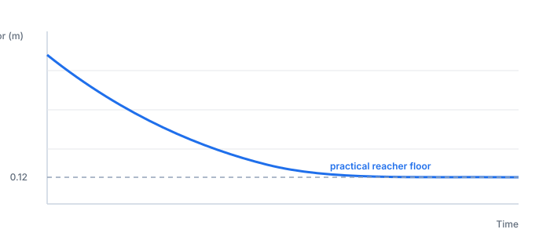
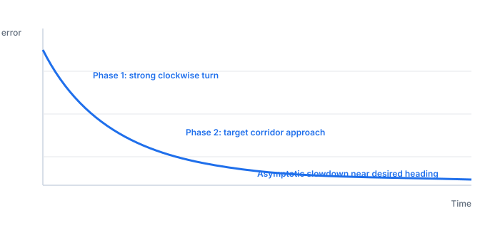
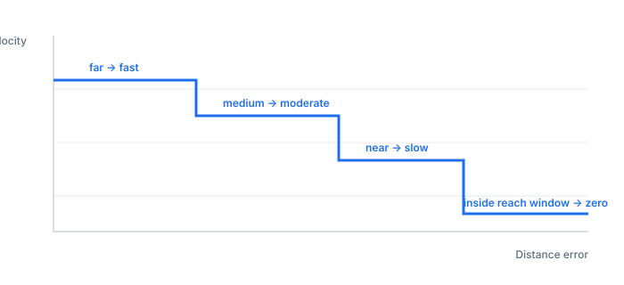

Evidence legend
Every milestone row in the table below carries an explicit status label. No claim is presented without a status.
✓ Verified
Confirmed by headless smoke test or a logged development run.
◎ Visually verified
Observed in a reference MuJoCo run; not programmatically confirmed.
○ Proposed
Documented architecture or planned next step; not implemented in this submission.
Simulation milestones
The milestones below summarize what the GT FSM autonomous baseline demonstrated in simulation. The evidence comes from development logs, headless checks, and visual inspection of reference runs. No result is promoted to a higher evidence level than its source warrants.
| Milestone | What it demonstrated | Outcome | Status | Caveat |
|---|---|---|---|---|
| Headless smoke test | Environment and assets were ready for autonomous control. | Scene, cameras, bodies, sites, joints, and ONNX policy warmups were verified. | ✓ Verified | Validates asset loading, not task success. |
| Source approach | The walker could move the robot into a source-side reach corridor. | FSM reached HOVER_SOURCE after the settle and approach phases. | ◎ Visually verified | Ground-truth pose quality drives this transition; Visual Oracle is not yet integrated. |
| Hover and descend | The right reacher could move toward hover and grasp-height targets. | Palm approached the object within the practical grasp window. | ◎ Visually verified | The reacher showed an empirical accuracy floor around 12 cm; threshold was set accordingly. |
| Kinematic grasp | A deterministic grasp backend could stabilize object pickup. | Attachment triggered near the close-grip window; observed attach distance was 0.128 m in the reference run (snap_offset 0.030 m). | ✓ Verified | This is a simulation shortcut, not physical finger contact. |
| Source lift | The attached object could be lifted and carried in the right hand. | The cylinder tracked the palm through lift and transport. | ◎ Visually verified | Lift height depends on reacher convergence and carry-pose stability. |
| Target transport | The walker could transport the attached object toward the target side. | The robot carried the cylinder while maintaining the reacher carry pose. | ◎ Visually verified | Target-side navigation required empirical tuning; false-positive guard added. |
| Placement and release | The FSM could lower, open grip, detach, and retract. | The object was released above the target surface and placement was visually successful in the reference simulation run. | ◎ Visually verified | Post-release settling is not validated programmatically. On-table confirmation requires a post-DONE proximity check that is not yet implemented. |
| Visual Oracle source localization | The system could localize the source object from camera data, replacing the ground-truth simulation state read for source-side phases. | Architecture designed; depth back-projection and EMA observer modules specified. | ○ Proposed | Deterministic segmentation/depth logic, not a learned detector; occlusion and lighting variation remain risks. |


